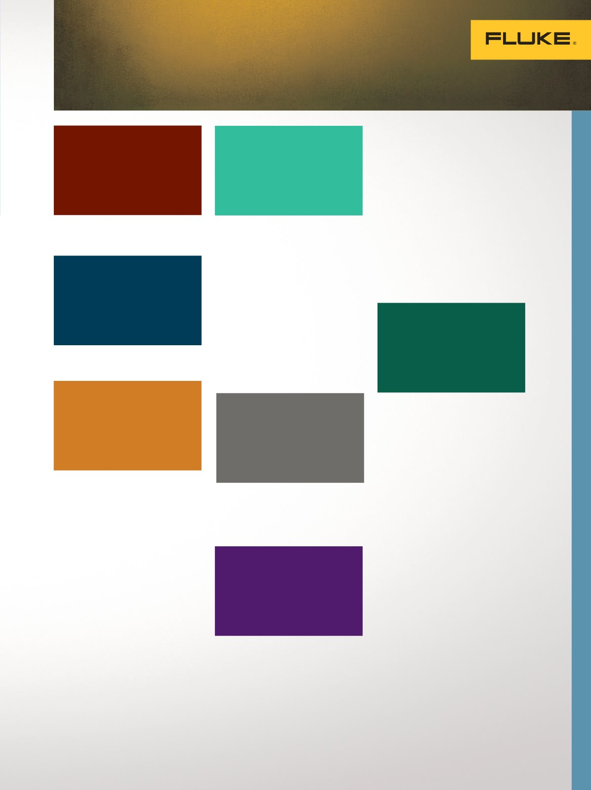

Instrumentos de calibración de procesos
3
Calibradores multifunción............... 5
Calibrador de procesos
con documentación automática...............5
Calibrador de procesos
con documentación automática
con HART.....................................................5
Calibrador de procesos de precisión......5
Precisión multifunción
Calibrador de procesos..............................6
Calibrador de procesos multifunción......6
Multímetros digitales.................................6
Multímetros de precisión..........................6
Calibradores de lazo en mA............. 7
Calibradores de lazo..................................7
Calibrador de lazo IS.................................7
Calibrador de precisión de lazo...............7
Calibrador de precisión de lazo
con HART.....................................................7
Comunicaciones/diagnósticos..................7
Calibrador de Volt/mA...............................7
Herramientas ProcessMeter
™
...................8
Pinzas amperimétricas
de miliamperios..........................................8
Pinzas amperimétricas
de procesos de miliamperios...................8
Calibradores de presión digitales...11
Calibrador de presión..............................11
Calibrador de presión con bomba.........11
Calibrador de presión
eléctrico portátil.......................................11
Calibrador de presión IS.........................11
Módulos de presión..................................12
Módulos de presión IS.............................12
Calibrador de presión
de doble rango..........................................12
Módulos de presión..................................12
Módulos de presión IS.............................12
Comparadores de presión
y manómetros maestros................. 13
Comparadores de presión de gas..........13
Calibrador de manómetros
de precisión...............................................13
Manómetros de presión
de referencia.............................................13
Calibradores de presión
de referencia................................. 14
Calibrador de presión portátil................14
Comprobadores de peso
muerto de laboratorio.................... 14
Comprobador de peso
muerto neumático....................................14
Comprobadores de peso
muerto hidráulicos...................................15
Comprobadores de peso
muerto electrónicos.................................15
Instrumentos de calibración de procesos
Adquisición de datos
Calibración
de temperatura
Calibración de lazo mA,
eléctrica y multifunción
4
9
16
Calibradores de
temperatura portátiles................... 17
Calibrador de procesos de RTD.............17
Calibrador de termopares.......................17
Calibrador de temperatura.....................17
Fuentes de temperatura
de campo multifunción.................. 17
Calibradores de metrología
de campo de bloque seco.......................17
Fuentes de temperatura
de campo....................................... 18
Calibradores portátiles
de bloque seco..........................................18
Calibrador de bloque seco doble...........18
Calibradores de bloque
seco de campo..........................................18
Pozo de metrología en
terreno ultrafrío........................................18
Horno termopar.........................................19
Microbaños................................................19
Calibradores de metrología
de bloque seco..........................................19
Fuentes infrarrojas
de temperatura.............................. 19
Calibradores IR de precisión..................19
Calibradores IR de campo.......................19
Gama de termómetros.................... 20
Termómetros “Stik”................................. 20
Lector de temperatura portátil.............. 20
Lector de temperatura de
cuatro canales.......................................... 20
Indicadores de temperatura.................. 20
Control de las
condiciones ambientales............... 20
Termohigrómetro de precisión.............. 20
PRT de precisión........................... 21
Termistores................................... 21
Software
.......................................................................................
22
Accesorios
...................................................................................
22
Sistema de
adquisición de datos.......................9
Calibración de presión
10